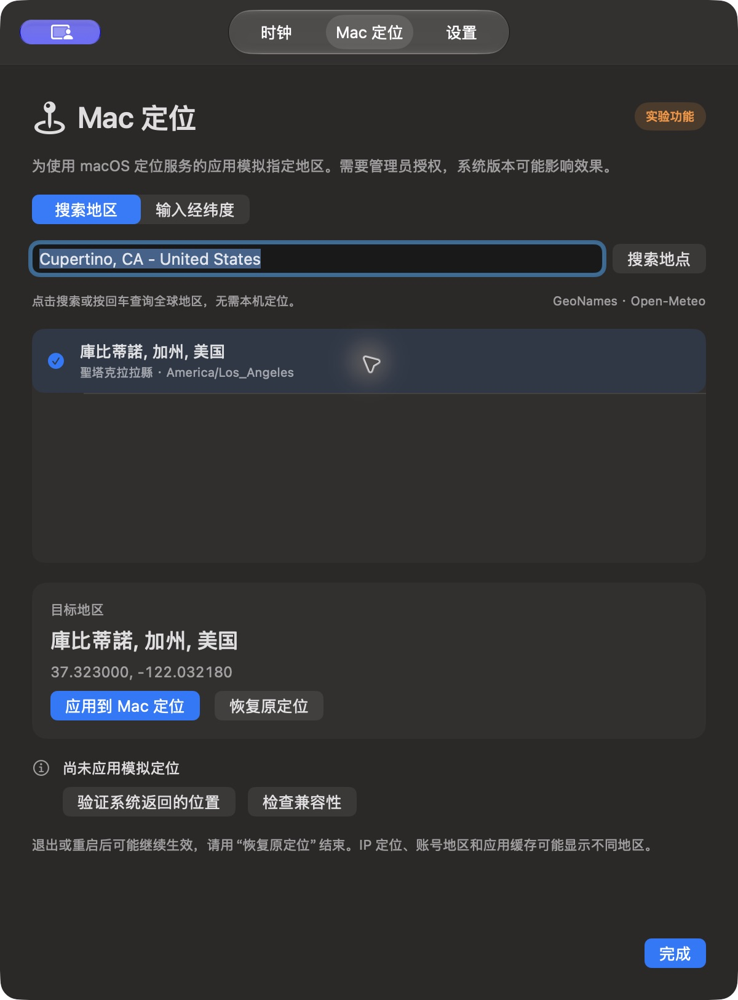

01 / THE WHOLE PICTURE
Never lose a day.
Every clock shows the full year, month and day. Next-day and previous-day labels make crossing time zones feel natural. A small seconds orbit keeps the current second in view.
A QUIETER WAY TO KEEP TIME
World clocks, full dates and local weather.
A quiet companion for your Mac.
macOS 14+ · Apple Silicon & Intel · English & 简体中文
New in preview · Mac Location ↗
01 / THE WHOLE PICTURE
Every clock shows the full year, month and day. Next-day and previous-day labels make crossing time zones feel natural. A small seconds orbit keeps the current second in view.
02 / YOUR OWN ARRANGEMENT
Browse 400+ time zones and representative cities worldwide. Search by city or country, then choose up to six clocks. Arrange them horizontally, stack them vertically or move each clock independently.
03 / A LITTLE MORE CONTEXT
Current city weather and Celsius temperatures sit alongside the time. Weather refreshes every 15 minutes.
MADE TO STAY OUT OF YOUR WAY
Keep a horizontal strip, a vertical stack or separate clocks on your desktop. Full dates and times stay close, with all your regions one click away.
Choose a layout from the title bar. Drag each clock to move it; release near a screen edge to snap. Positions are saved automatically. Choose Open in the menu bar to restore all clocks; close any clock to send it back to the menu bar.
Get to know Meridian
MAC LOCATION · EXPERIMENTAL PREVIEW
Simulate a selected region on this Mac for apps that use macOS Location Services.
Available in the v1.5.0 experimental preview. Current stable download: v1.4.0.
Enter a city, state/province and country, then press Return or choose Search location. Review the named candidates, or enter coordinates manually.
Cupertino, CA - United StatesSelect a candidate and check its coordinates before applying. macOS asks for one-time administrator authorization.
Choose Verify system location for a fresh Core Location check. Then refresh your location in the app you want to test.
Use Restore original location to return to your saved settings. Quitting offers Restore and quit, Keep and quit, or Cancel.
Tested on macOS 27.0.1. This experimental macOS integration can behave differently across system versions and apps.


A FEW GOOD QUESTIONS
English is the default. Switch to Simplified Chinese in Settings without restarting the app.
Weather uses Open-Meteo for each clock’s city without requesting device location. The local clock follows your system time zone. The separate Mac Location preview requests location permission when you choose Verify system location.
Sparkle powers automatic update checks and optional background downloads. Release archives are signed and verified before installation.
Your clocks keep running. Meridian labels unavailable or outdated weather clearly, and you can turn weather off at any time.
Meridian is available under PolyForm Noncommercial 1.0.0. Permitted noncommercial use, modification and redistribution are allowed under the license. Commercial use is not granted.
Try Cupertino, CA - United States or Toronto, Ontario - Canada. City, state/province and country help distinguish similar place names. Online city search sends your query to Open-Meteo, using GeoNames data, and works with device Location Services turned off. You can also enter decimal latitude and longitude manually.
Apps that use macOS Core Location can receive the simulated region. Apps that use your IP address, account region or cached data may show something different. Mac Location does not change your IP address or account country.
Simulation can continue after quitting or restarting. Choose Restore original location, or Restore and quit, to end it and restore the original simulation settings. macOS may ask for administrator authorization again.